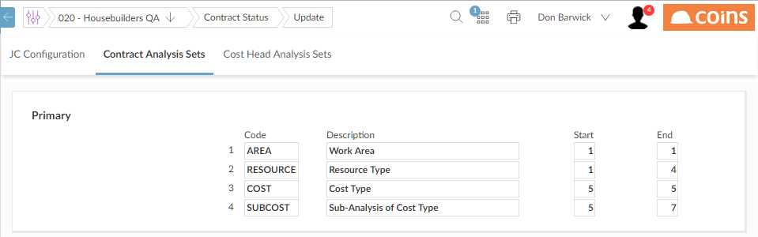

Populating Analysis Sets Automatically
If the codes for a record have a structure that represents information about that record, you may find it useful to base the analysis sets on the code. In this way, can populate the analysis sets automatically when a new record is created.
For example, suppose the in Status are of the form: 9999A99, where the first digit represents type of work, the first four digits represent type of resource, the letter represents the type of cost, and the digits following the letter represent a subanalysis of that cost. So the 1300F01 might be for a road-building , broken down as follows:
| 1
|
Earthworks |
| 1300
|
Bulldozer |
| F
|
Fuel |
| F01
|
Fuel from own bowser |
To set up analysis sets to relate to , you could enter:

Then, whenever a new is created, populates the analysis sets based on the code.
However, analysis sets need not necessarily be related to the record code. You can use them in whatever way suits your reporting needs.